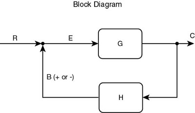

Home
Home

This book is intended as a hands-on introduction to understanding some land surface processes as they pertain to interactions between the soil, atmosphere and plant continuum. It is intended not only to addresse questions posed in the text, but to help the readers formulate answers to their own questions, either for academic or professional purposes. The subject matter extends over a number of different fields (or disciplines)—meteorology, agronomy, horticulture, hydrology, forestry and geography. The material, either explicit or implicit, in the book may be of practical importance to practitioners and students alike.
A unique aspect of this book is the inclusion of a computer model (described below in part 3) along with the text. The subject matter does not cover all aspects of land surface processes but only those that can be described with the aid of this particular model. To make use of such a model, one must perform a simulation, so called because the execution is intended to simulate (or approximate) a natural process. What differentiates this book from others related to the atmospheric surface or boundary layer is that the simulations constitute an integral part of the text. Indeed, the model allows the reader to interact with the textual material and therefore become an active participant in the learning process. Through use of the model the reader will obtain an understanding in a way that is not directly obtainable from any text. It is a Socratic style, except that the reader functions as his own Socrates, posing his own questions that can be answered best by performing the appropriate simulation. Thus, the process is open ended by allowing the reader to explore aspects of land surface processes in ways that may not have been conceived by the authors.
We envision that this text will be used at more than one level of training. One level is that of university students, including those who have not been exposed to formal courses in boundary layer meteorology, plant science, agronomy or indeed in any of the various fields that are interwoven in this book. As a formal seminar course at Penn State, 'Biosphere-Atmosphere Interactions' has functioned successfully using a prototype of this book. In this course, we have worked with students from agricultural engineering, meteorology, geography, forest management and agronomy. Despite lack of knowledge in the other disciplines, graduate students taking this class have been treated as younger colleagues rather than as empty vessels who require filling with knowledge as one would fill the gas tank of a car. The result has been a successful interaction with students which led, on more than one occasion, to insightful revelations for the instructors, who are the authors of this book.
This book, like the seminar course, is intended to serve as an introduction to some sophisticated concepts in land surface processes but without becoming highly technical. We believe that it is possible to understand the subject material and even to anticipate the outcome of the simulations by thinking physically and intuitively without recourse to complex physics and multitudes of equations. Therefore, we deliberately avoid use of equations n (or express them in the simplest possible ways); specialized terminology or lengthy discussions of the physical, chemical or biological nature of the process. In that way a meteorologist, for example, will be able to understand how plants work, albeit on a somewhat superficial but highly informative level, whereas a plant scientist will gain an appreciation on a basic level how the atmosphere affects plants.
In combining material from diverse fields, the end result is a combination of subjects and components that exists hardly anywhere else in print, such as a discussion of the effect of carbon dioxide on transpiration or of thermal inertia on nighttime air temperatures, the importance of moisture at the earth's surface (as opposed to the root zone), the importance of feedback in mitigating or enhancing the importance of plants on microclimate and other issues.
With its unique mix of scientific disciplines and its absence of excess terminology and mathematics, this book should provide a useful cross disciplinary vista for the reader, providing novel insights to the workings of the plant, soil and atmospheric canopy and the interaction of the different components. To soften the odious problem of strange jargon, we will italicize all terms that represent technical terms in the common language of a particular discipline. Terms required for an understanding of the course are listed at the end of each chapter. Terms whose definitions are not fully accepted or have not been defined elsewhere are given in quotes. On the other hand, technical terms are introduced and discussed in this book that are scarcely treated anywhere else, such as 'moisture availability' and 'auto-humidification'.
This book is also intended for another level, the practicing specialists. By this, we refer to those who have professional interests in understanding how their discipline is related to the land surface processes, but whose domain falls in other disciplines. For example, a meteorologist might wish to learn more about how the atmospheric boundary layer is affected by the plant canopy without having to become a plant scientist or to read and understand a highly technical textbook. Similarly, an architect or city planner might wish to determine the solar energy absorbed on a roof of a certain color or the effects on surface temperature by planting or removing trees. The answer to these questions may not be explicitly given in the text, however, but an understanding of the textual material, coupled with familiarity with the model, will allow the specialist to pose his own questions.
The chapters in the book are intended to be both read and experienced. We recommend that one first reads the material and then performs the simulations, chapter by chapter. Each chapter builds on the last, so that the best approach to understanding the material in this book is to undertake each chapter sequentially. Each chapter is divided into two sections, which we will simply call "Level 1" and "Level 2". In the first part of each chapter, Level 1, the material is introduced, concepts are discussed and a precise set of instructions are provided for carrying out the simulations step by step. The results of these simulations are discussed in the text and a set of questions at the end of the chapter are provided which are based on the output from the simulations. Level 2 introduces more complexity and suggests additional simulations and the possible outcome of these simulations but does not furnish a detailed treatment of the results. Moreover, these simulations may be open ended, in the sense that their consequences may not be readily explainable by the text material, or that the results may be completely unforeseen even by the authors. The readers are encouraged to proceed to whatever level best suits their needs and expertise. In this respect, Levels 1 and 2 are roughly the equivalent of undergraduate and graduate level material.
It is our hope that the reader will not only learn from the material in the text but also appreciate the limitations of a physical model.. Models are not nature but at best a somewhat realistic structure that allows one to gain some insight into the natural world. As the model constitutes an integral part of the text, the latter is not intended to delve much deeper than the model is capable of describing. Therefore, use of external sources is encouraged in order that the reader may gain a much deeper insight into ideas addressed in the text. Several excellent texts already exist which cover a wide range of topics relevant to this book. These are included in the list of references and are considered to be supplements to the material offered in this book. At times the book adopts a light hearted approach to its description of complex or contentious subjects. The authors offer an aplogy if we seem to have slighted or overly simplified these topics but we believe that it is important to demystify the subject matter to the extent that specialists in one field are not put off in trying to delve into someone else's field.
Our atmosphere has no real boundary except the surface of the earth. Move sideways and, unless one strikes a mountain or an object embedded in the earth, one will never encounter a boundary. The top of the atmosphere is bounded by, literally, almost nothing. Indeed, it is very difficult to precisely assign an altitude to the top of the atmosphere. It just gradually disappears with increasing height until one is left with a few ions whizzing about. The lower boundary, the earth's surface, can not be precisely defined either, but the effect of that surface on the atmosphere is real and profound. Looking down from above, however, we would be hard pressed to say what and where the surface is located. Is it the tops of the buildings, the surface of the vegetation, or the soil in and around the vegetation? Is it the faces of rocks, stones and other debris scattered about on the landscape? Yet, we know when our feet are on the ground and we can ask questions about how that ground affects the atmosphere even if we are not too sure of what and where that ground surface exists. We live at the surface and the atmospheric events that occur affect us as surface creatures in a variety of different ways.
The question is sometimes asked:: "Why is it warm near the surface of the earth and cold at high altitudes, when the earth's surface is farther from the sun?" Of course, the sun really warms the earth, which then warms the atmosphere above it. Almost all of the solar energy not reflected away by clouds, the atmosphere or the earth's surface is absorbed at the ground or in material or objects that cover the ground, such as plants, houses, trees, etc. About 50% of the solar energy reaching the top of the atmosphere is ultimately absorbed at the surface of the earth on a sunny day at middle latitudes in summer. Thus, the radiator for maintaining the warmth of the atmosphere is at the surface and only indirectly does that heat come from the sun.
Still, the earth's surface would not exert as much variability on the atmosphere if it were everywhere uniform or if all the sun's radiation absorbed by the surface were used to heat the air in contact with it. Thus, the way in which that solar energy is partitioned at the surface, is highly variable and highly dependent on the nature of the surface. Some of the absorbed solar energy is stored in the ground or locked away in the molecules of evaporated water. Look around you at the landscape and you will see an infinite variety of objects comprising the ground surface. No two points on the ground are identical. Consider any region one square kilometer in area. It consists of a kaleidoscope of objects, textures, colors. The terrain is not flat. There are small hills, gullies, knolls. There are people, dogs, trees, bushes, grass, soil. Focus in on any 10 square meter area within that larger square and the surface is equally varied, perhaps with patches of vegetation, or a house, part of a road, a little stream. Focus in on a 1 square meter or 1 square centimeter area within that larger square and the variegated nature of the surface remains evident, albeit on a smaller scale. The soil is speckled with color, rocks protrude, plants or bits of vegetation are visible. Leaves, some shiny some dull, are orientated in various directions, deflecting and absorbing the sun's rays, trapping the heat or moisture within the vegetation canopy, shading the surface. The variations are endless no matter where we look.
There variations in the ground surface figure intimately in the distribution of the solar energy into its components, as well as in the reflection of that solar energy. Those components, which are given the names of sensible and latent heat—quantities which are to be described and defined in the text—profoundly affect the local climate, the so-called 'microclimate' (from the Greek root micro, which in its Anglicized form means small). Because the earth's surface is so varied, the microclimate is also endlessly varying on all scales from the very smallest to the size of a region. For example, the sea breeze is, familiar to inhabitants along the New England coastline, is manifested by a cool breeze which pushes inland from the ocean on warm days. This phenomenon is produced by the contrast between the heated land surface and the cooler water, which establishes a pressure gradient from sea to land that drives the cooler air inland. The sea-breeze front formed at the leading edge of this cool air may move several kilometers inland during the day and extend hundreds of kilometers along the coast. As the warm air is displaced, vertical currents of air develop which cause clouds, and occasionally heavy thunderstorms, to form along the sea breeze front. When the day's heating over land ceases in the evening, the sea breeze front recedes over the ocean, becoming a land breeze.
Yet on a much smaller scale, the same process that makes a sea breeze is occurring on a sunny afternoon between the expanse of macadam in a shopping center parking lot and a surrounding grassy meadow or between wet and dry sand along the seashore. One can easily verify the vast difference in surface temperature by walking barefoot across the parking lot or dry sand to the meadow or wet sand. Of course, it is unlikely that clouds and thunderstorms will form along the edge of a parking lot or between dry and wet sand, but it is nevertheless possible for differences in atmospheric pressure to be produced by such differences in temperature, which would induce horizontal and vertical currents of air. Such hot spots are also found in nature even when the surface has not been altered by humans. Birds soar in thermals produced over the heated face of a rocky outcrop along the sides of a mountain. Even different types of vegetation utilize the solar energy differently, so that subtle horizontal temperature variations may be produced over an inhomogeneous vegetated surface, e.g, a corn field adjacent to a forest. Regardless of the scale, wherever there are temperature gradients at the surface, there is also pressure gradients which force the air to move horizontally and vertically.
It is not always readily evident, however, what processes are responsible for a particular microclimate. Consider the example of a white cement sidewalk aside a strip of green grass on a sunny summer's day. If one considers only the amount of absorbed solar energy, it would seem reasonable to conclude that the sidewalk should be cooler than the grass because it is reflecting a much greater fraction of the solar energy than the darker grass. It would be immediately evident to anyone crossing the sidewalk with bare feet, that the sidewalk is warmer than the grass. The reason, of course, is that the grass stays cool by evaporating water and the sidewalk has no means to cool itself. That is precisely how humans can maintain a reasonable body temperature while exercising on a hot summer day. Similarly, grass uses much of the solar energy to evaporate water rather than to raise the temperature of the grass and the air. By contrast, all of the sun's energy is used to heat the sidewalk and the air above it because there is no water available for evaporation. Yet it is also possible to imagine a sidewalk that reflected almost all of the incoming solar energy, in which case the sidewalk might well be cooler than the grass surface. We can deduce the physical reasoning behind the result that the sidewalk is warmer than the grass only by measurement or by experience but we can not be sure, a priori, which process (evaporation or reflectivity) will dominate.
In fact, it is possible to contrive situations in which the intuition might prove faulty, such as in our imaginary scenario in which the sidewalk material is highly reflective. How could we be sure which surface would be the hotter, the sidewalk or the grass, in the absence of measurement? Further, imagine that the sidewalk is sloping at an angle to the sun and the grass is a flat surface. What is the answer now regarding which surface is hotter? The problem is even more complex in this case because the slope of the surface, the reflectivity and the evaporation are factors that must be considered.
This type of problem can be of considerable practical importance. For example, imagine a scenario in which the two sloping sides of a roof face at different angles to the sun at different times of the day and one wishes to determine which roof face absorbs the most sunlight and how much each face absorbs during the course of a day. Perhaps one would also wish to alter the reflectance of one side of the roof, such that the solar energy absorbed by both sides of the roof on a sunny day would be equal. The solution to these problems would be difficult to intuit but they could be obtained by calculation if we knew the properties of the surface.
As soon as one tries to calculate something, however, it is necessary to resort to an idealized 'model'. We may know the parameters in the problem, at least approximately, but our calculation would refer to an idealized sloping roof surface not the actual roof itself. We might choose a simple model of the roof—a sloping surface—and make some assumptions about parameters involved or the geometry of the roof. We might wish to ignore evaporation and consider only slope, azimuth and reflectivity of the roof. As we endeavor to make this calculation we realize that many more factors are involved than just the slope, azimuth and reflectivity of the roof surfaces. For example, the thermal conductivity of the roof might need to be considered, or the wind speed and roughness of the roof surface.
Adding to the complexity is the interrelationship between parameters. The reflectivity or the thermal conductivity of a surface, such as the sand along the beach, might depend on the amount of water in the surface, as does the evapotranspiration. An increase in one of these parameters might actually cause a second one to decrease and a third one to increase, but the increase in the third parameter might then cause the second one to increase and the first one to decrease. For example, as the soil dries out it becomes lighter, reflecting more solar energy. Drying out of the soil causes it to become hotter, as the water content in the soil is gradually exhausted, but the whitening of the soil would reduce the solar energy absorbed in the sidewalk. The result is a tug of war between the drying out and the whitening, each affecting the heating of the sidewalk a different extent. This tug of war between the different parameters in a system is an aspect of what is called feedback. Feedback processes constitute a central aspect of this book and a focus of the later chapters. An advantageous attribute of the model is that it allows one to investigate various feedback processes in an evolving system.
Feedback is a sophisticated concept, which has applications in some very technical areas, such as electronic signal processing and the design of high performance aircraft. How can one describe feedback between soil, atmosphere and plants qualitatively, that is in words, at the level appropriate to this book? The answer is that it can't be done adequately without a model that allows the feedback processes to be implemented and studied by the reader. The formal expression of these mathematical interrelationships in this model is called a 'parameterization'. Parameterization simply means that one writes out equations governing these relationships between all the parameters; a set of parameterizations constitute a model.
The model's purpose is to simulate some of the processes and feedback in the soil/vegetation/atmosphere system. The model that describes the soil/vegetation/atmosphere continuum and the transfers of energy, momentum and water through it. Such a soil/vegetation/atmosphere/transfer (or SVAT) model refers to a system that is almost infinitely complex. Figure 1 shows the basic structure of the model we are to use. Yet, no model can be so complex in that it precisely describes the natural world. So it must necessarily be simplified. As one often does not know the correct mathematically description of all internal components in the SVAT system, the ultimate complexity of the SVAT model is limited as much by one's ignorance as one's tolerance of uncertainty in the results and the limitations imposed by cost in time and resources to construct the model. Moreover, were it possible to construct a model exactly as complex as nature itself, that model would be as difficult to understand as the unparameterized physical world it represents. In that respect, nature is the ultimate model but such a model might be quite bewildering to apply and to comprehend even if it could be inserted into a computer.
Thus, the model can answer questions, even some not envisaged by the user, but it can not answer all questions. Moreover, it can address specific problems only if the questions are well posed. A silly or absurd result, or even an abortion of the simulation, may simply be the model's way of telling the user that the input parameters are not reasonable. Like a computer or an automobile, the model will function properly if operated properly. We often read of spectacular errors made by a bank or insurance company that are attributed to computer error. Computers very rarely fail. Such errors are usually the result of improper use or incorrect data. To aid the reader, a short user's guide to the model is provided. Operation of the model should be fairly obvious, however, requiring to special computer skills but just a PC with at least a megabytes or two of hard disk storage, 4 megabytes of memory and Windows 3.1. Any undue problems should be reported to the authors.
The book consists of a text and the computer simulation (SVAT) model on a floppy disk. The model is one-dimensional. It describes various processes in a column that extends from the root zone below the soil surface to a level well above the surface canopy. For convenience, let us refer to the surface canopy as the mix of vegetation with underlying soil and surrounding bares soil. We will also refer to the vegetation canopy by itself. The latter consists of just the vegetation and underlying soil. The processes and quantities described by the model are allowed to evolve in time during a day and night (up to 24 hours). Output of the model consists of the surface energy (sensible, latent and stored heat) fluxes at the soil surface and in, around and above the vegetation canopy, the flux of momentum above the canopy, the transfer of water in the soil and in the plants, the flux of carbon dioxide between the atmosphere and the plants (the carbon assimilation rate), the temperature of the soil, leaves and air above the vegetation canopy, the radiometric temperature of the vegetation and soil mix, the leaf temperature, the ground temperature beneath the leaves and in the bare patches surrounding the vegetation, the temperature of the interleaf air spaces, the wind velocity, temperature and humidity of the air above the surface canopy and other parameters.
Although the model is limited to one dimension, it has an extra dimensionality in that it implicitly refers to a horizontal area of undefined size that contain a mix of bare soil and vegetation. Both vegetation and bare soil model function separately but they are allowed to interact. Thus, one can specify a fractional of vegetation cover and other attributes of the vegetation and bare soil fractions without having to know the size of the area. Interpretation of the results are, of course, a matter to be considered. The model is limited, however, in its description of various aspects of the soil, plant, atmosphere continuum, such as the water transfer in the soil, the physiology of plant leaves, the structure of the roots, the description of the plant canopy during the night, etc. Because the model is an imperfect representation of nature, the user should always question the validity of the output in terms of whether the results make physical sense. Sometimes these results are counter-intuitive, but correct. But the reader should always be cautious. Caveat Lector! This is a healthy attitude to adopt for any text and by any scientist toward either model simulations or measurements.
B. Contents of the chapters
Each of the X chapters contains a description of the subject, with the aim being to establish enough knowledge and critical thinking to execute and evaluate a set of computer simulations. The chapter begins with a short text discussing the nature of the subject at hand and introducing some background information and perhaps a few equations and some physics necessary to understand the simulations. Simulations follow the introductory text. These are to be carried out as exercises, in which the user enters certain parameters in the input data, executes the model and then calls up certain graphs or output products. The first set of simulations, 'Level 1' are to be executed with close reference to the text. Input parameters are listed separately in a table. Output products are discussed. Level 1 concludes with a series of questions for the user. Level 2 is more free form, an adventure for the user. It begins with some more description, followed by suggestions for further simulations. Level 2 poses questions that might be answered by the user at some later time and which may have no obvious solution. In these cases the design of the simulations and the exact choice of parameters are left up to the user. A series of terms to be looked up elsewhere or particular to the text is listed at the end of the chapter. This is followed by equations used in the text and by a list of references for the material contained in the chapter.
No detailed knowledge of any one of the disciplines comprising the text material is assumed. For example, long wave (thermal) radiation is mentioned, but the Planck black body relationships are not discussed in any detail, nor is the geometry of radiation or the concept of extinction coefficients. This type of material can be obtained in other texts, such as those referred to at the end of each chapter. If the reader has a casual acquaintance with thermal radiation, it will be possible to understand all that is required in the text with the aid of the simulations and some thought. Outside reading is highly recommended but not absolutely necessary for this understanding.
Micrometeorology is a complex and often mathematical science, however much of the subject can be appreciated without recourse to mathematics. For example, we all know that when the sun shines, the ground warms, puddles dry up, the winds become gusty, thermals form allowing birds to soar, grass and flowers grow. At night temperatures decrease, but remain higher in cloudy conditions, puddles don't dry up as easily and the winds are calmer. What is not so intuitively obvious though are the non-linear interactions between physical components. We are interested in the nature of these interactions rather than a description of its components for their own sake. To gain an initial understanding of the resultant behavior of a system we eschew confusing details and concentrate on the resultant effects.
It is our hope that this course will thus prove useful for the non-specialist and, more precisely, to those who are interested in studying problems involving interactions between the vegetation and the atmosphere. We want to avoid the deeply technical side of many questions because equations and jargon are digressive and often divide rather than unite. Accordingly, we will avoid discussions of such topics as "higher-order closure theory" or Monin- Obukhov static stability functions and try to use intuition where possible. To address such issues we must begin with some elementary concepts such as the surface energy balance. Our ultimate goal is to sharpen up one's intuition so that we may begin to answer such questions without recourse to a computer.
Strictly speaking, the biosphere contains all living things and, as such, extends from deep inside the earth into the upper atmosphere. We will restrict the definition of the biosphere to the domain most immediately affected by vegetation; a layer extending from just inside the ground (the root zone; say a meter or two) up to a height somewhat above the vegetation canopy, say a few tens or hundreds of meters above the ground. As such, the biosphere is where we spend most of our time and so, is of direct importance to us. Although we will need to start the course with a general discussion of the driving force for land surface processes, the surface energy balance, we will later address questions concerning how plants modulate the land surface processes and thereby how they affect the biosphere.
Feedback is a word that will be used from time to time in this course. Feedback systems exist throughout nature and are inherent in complex, non-linear systems. The mathematical model upon which this course is based is highly non-linear and thus is able to capture a number of feedback processes found in nature.
Feedback is most often used in common language to describe the effect one encounters when sound from a speaker are fed back into the amplifier, leading to a sudden, high-pitched squeal that usually sends the person in charge of the sound system scrambling to change the volume setting and orientation of the speaker. A thermostat is an example of feedback produced by a servo-mechanism, which reduces the heat generated, say by a furnace, when the temperature reaches a certain preset level and it restarts the heating process when the temperature falls below the preset level. That type of feedback could be referred to as negative feedback because the effect of rising temperature is to counteract the rising temperature. Suppose the thermostat were set such that an increase in temperature created more heat output from a furnace. In that case the heating process would run away with itself and the room would become hotter and hotter. This is called positive feedback. Positive feedback is responsible for the squeal of sound in the speaker. Thus, negative feedback may nearly compensate for a reference input, reducing its effect on the output, and positive feedback amplifies the input.
Feedback Loop

We can illustrate the effect of feedback by Figure above. Let's demonstrate the figure using a somewhat facetious example. Suppose that a dispute takes place in a bar room, perhaps produced by a fleeting glance by Mr. Look at the girl friend of Mr. Grouch, who begins to get very angry at the wayward glance. The feedback loop consists of a single transfer function G, representing the forward component. We could imagine an input R, which is the wayward glance, anger by Mr. Grouch, which is the feed forward control element G, and some result of this possible encounter C. Now, let's say that Mr. Look has a friend who is respected by Mr. Grouch; We'll call him Mr. Sooth. Mr. Sooth mediates the situation through an intervention denoted by the letter H. Thus, Mr. Grouch is calmed down somewhat by the effect of Mr. Sooth and the atmosphere returned to relative calm. This is a negative feedback situation, denoted by the feedback element B, which, in this case, has a negative sign. Now, suppose Mr. Grouch hated Mr. Sooth, so that the sound of Mr. Sooth's voice only made Mr. Grouch angrier. The result of intervention H would be a positive feedback (B positive), such that Mr. Grouch only becomes angrier by the intervention. Mr. Sooth does not take the hint but continues to ply Mr. Grouch with soft words which only make Mr. Grouch angrier. The result is a blow up—a fight.
Only in extreme cases, however, does negative feedback entirely compensate for the input, although we will later present a case of feed forward in plants in which the input is actually reversed, not simply mitigated. In other examples (we hope you do not discover these in running the model) the effect may be a positive feedback leading to a blow up (mathematically speaking, a catastrophe) in the solution of the model. Some of these pitfalls may be lurking in this model, waiting for the user to choose just the right combination of input parameters. If this should happen, we advise the user to re-evaluate the input parameters or change them slightly. Sometimes, unwanted feedback may occur because the user has chosen unreasonable input parameters. In this case, the model's behavior should be a signal to the user that something is wrong in the initial conditions.
The mathematics of feedback systems can become very complex. We do not intend to delve into feedback processes in any more depth than we have done in discussing Mr. Grouch's problem. However, we will describe some rather interesting feedback processes in regard to plant regulation of their environment.